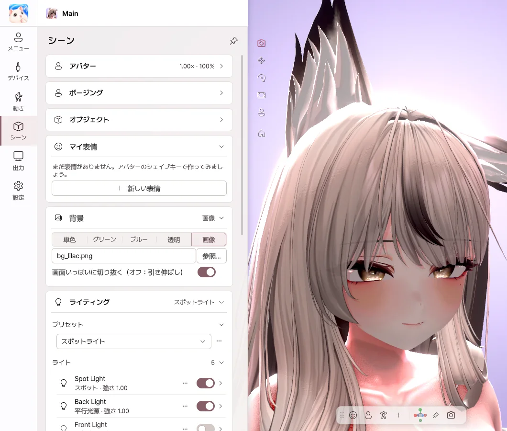
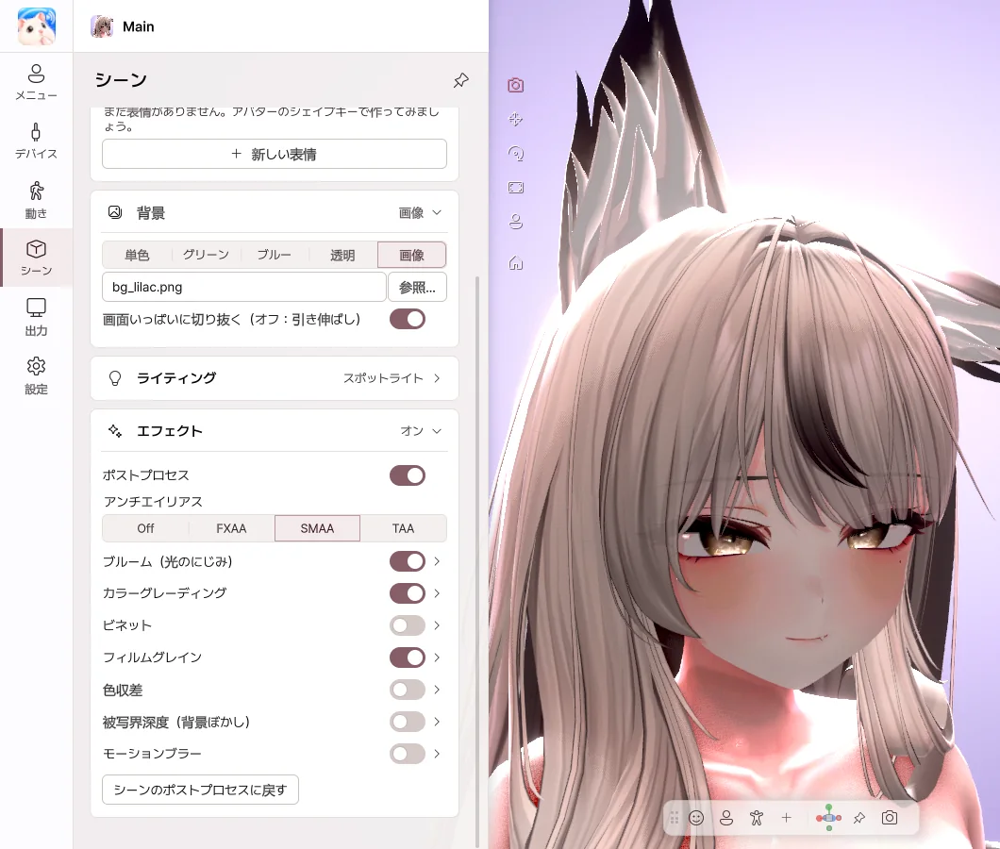

8. シーン
背景、ライティング、エフェクトを選びます。
ライティング

- プリセット で雰囲気を選ぶと、ライティングが一度に切り替わります。
- ライトごとにスイッチでオン / オフでき、明るさや色も変えられます。
- ライトを追加 で、フェイスライト、フィルライト、リムライト、平行光源、ポイント、スポットを加えます。
- 気に入ったライティングは プリセットとして保存 しておき、直したあとは 変更をプリセットに保存 で保存します。
ライトの詳細
| 項目 | 内容 |
|---|---|
| 色 | カラーの四角、RGB、HEX の入力、スポイト で画面の色を拾えます。色温度を使う をオンにすると、暖かい光・冷たい光から選べます。 |
| 位置・向き・ターゲット | チルト・ターン・ロール の角度、アバターについて動くかどうか、顔などの ターゲットを向く を決めます。 |
| 影・範囲 | 影とその強さ、やわらかい境界、光が届く 範囲、スポットの コーン角度 を決めます。 |
ビューでライトを選ぶと、ハンドルが表示されます。
- 向きのハンドル をドラッグして、ライトが照らす場所を変えます。下向き・回転の角度も一緒に表示されます。
- ポイント・スポットは X・Y・Z の矢印 で一方向ずつ動かせて、光が届く範囲がビューに表示されます。
- 平行光源は X・Y・Z の回転リング で回します。平行光源は、位置に関係なく、向きだけがライティングに影響します。
- Ctrl を押したままドラッグすると、15°・10 cm 単位で動きます。


背景
| 選択肢 | こんなときに |
|---|---|
| 単色 | 好きな色の背景 |
| グリーン・ブルー | 配信ソフトのクロマキーで消すとき |
| 透明 | Spout2 で背景なしで送るとき |
| 画像 | 画像を背景にするとき（拡大・縮小と、左右・上下の位置を調整） |


エフェクト

- ブルーム — 明るい部分が、ほんのりとにじみます。
- カラーグレーディング — 明るさ、コントラスト、彩度、色温度を調整します。
- 被写界深度 — 背景をぼかして、アバターを引き立てます。顔に自動でピント をオンにすると、顔に合わせてピントが合います。
- ビネット・フィルムグレイン — 画面の周辺や質感に、雰囲気を加えます。
- 色収差・モーションブラー・アンチエイリアス などもオンにでき、すべてのスライダーは数値を直接入力できます。
シェーダー
アバターに使っているシェーダーを、そのまま表示します。Poiyomi、lilToon などの主要なシェーダーで確認済みです。AudioLink とミラー検出には対応していません。